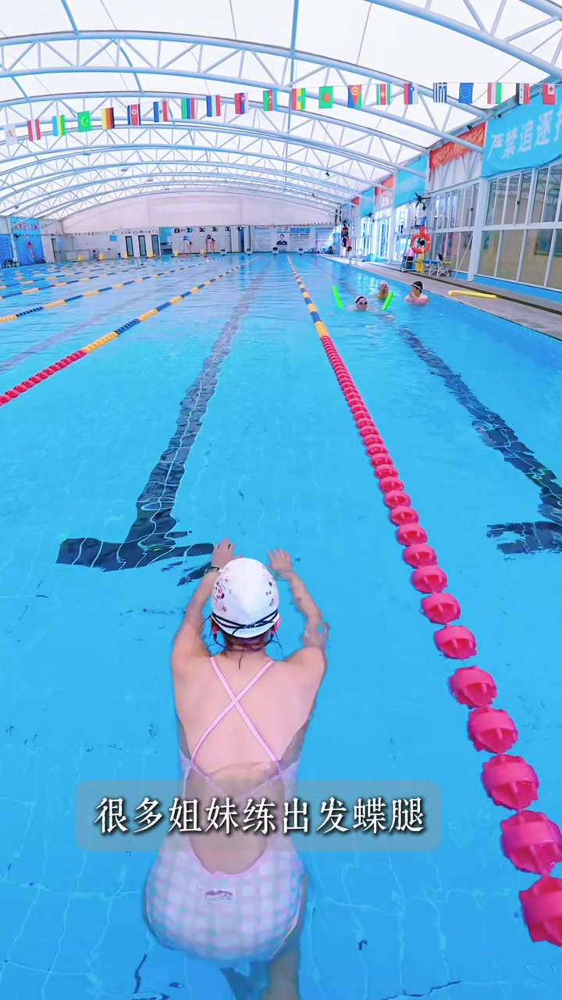
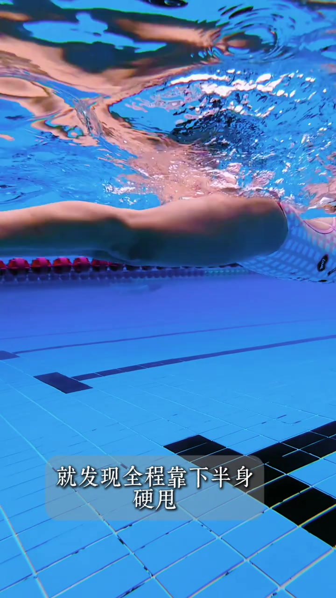
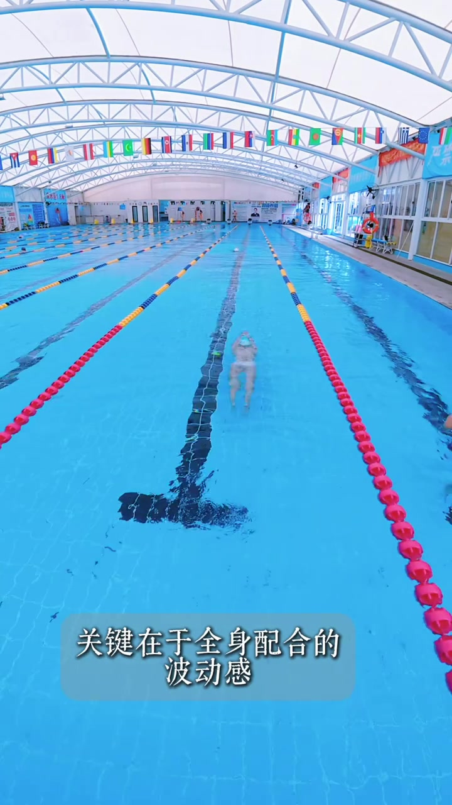
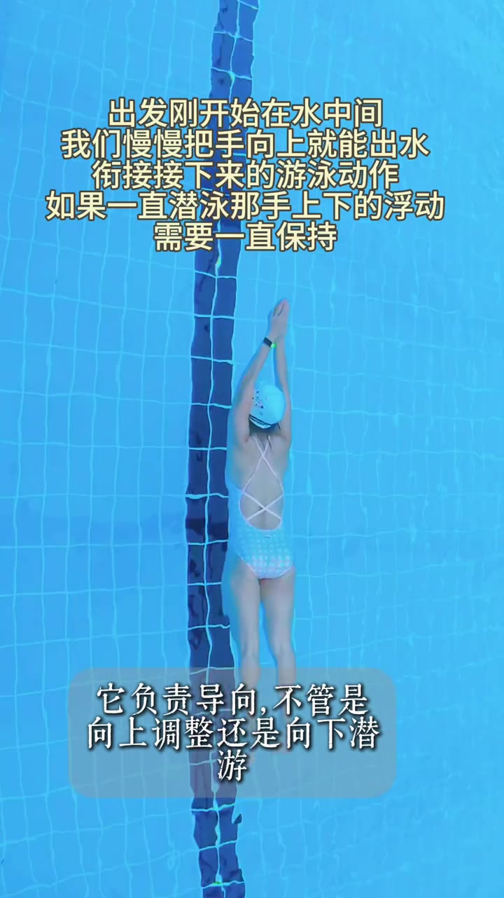
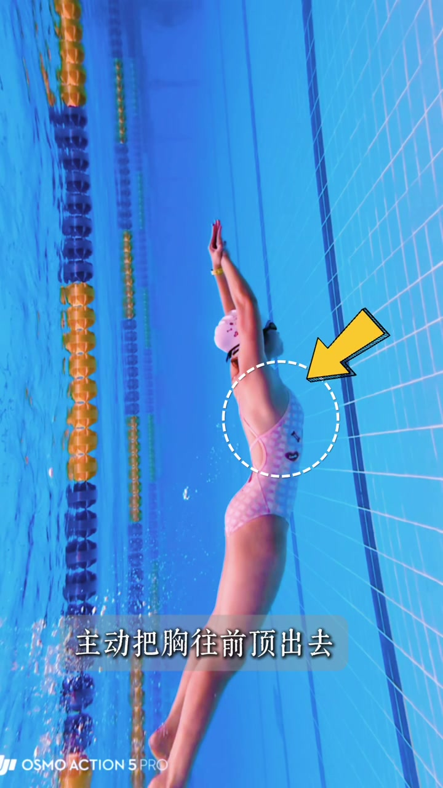
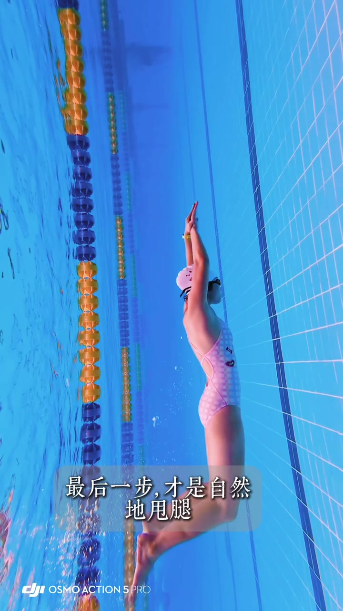
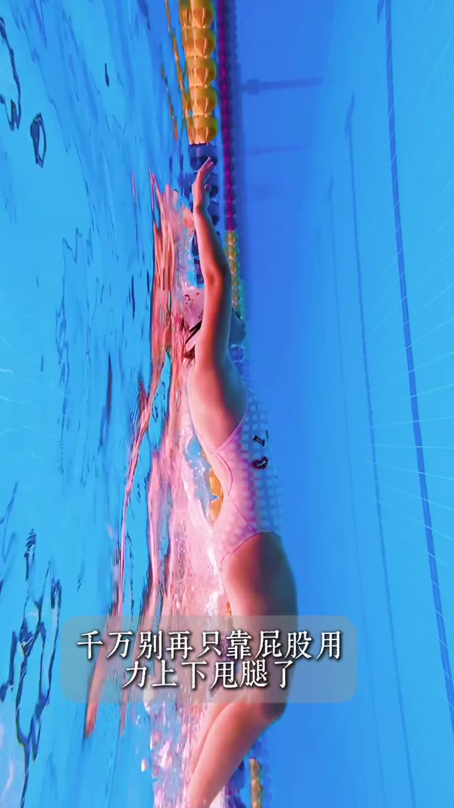
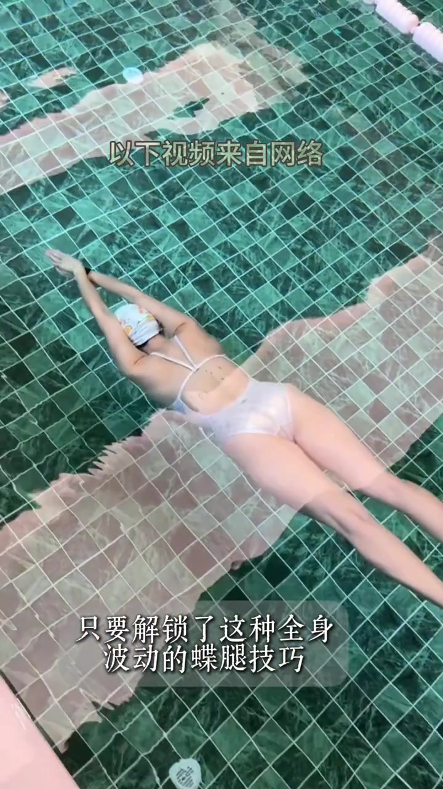

开场 · 00:00
很多姐妹练出发蝶腿，先撞上「撅屁股」误区
镜头跟在泳者身后：她戴白泳帽、穿粉白格子连体泳衣，双臂前伸站在泳道里，头顶是室内泳池拱顶与一串万国旗。画面叠字直接点题——「很多姐妹练出发蝶腿」——随后口播落到常见误区：以为蝶腿就是撅屁股，结果动作又僵又不雅，速度也提不上来。
Whisper 常把「蝶腿」识成「跌腿」、「撅屁股」识成「居屁股」。页末转录保留原始识别；正文按画面叠字与笔记文案校正为蝶腿 / 撅屁股 / 顶屁股 / 潜游。

误区证据 · 00:08
全程靠下半身硬甩，上半身不动
口播回忆上次教出发蝶腿的场景：很多人全程靠下半身硬甩，上半身完全不动——「这样可不行」。镜头切到水下：身体水平推进，叠字写着「就发现全程靠下半身硬甩」，把「只动屁股」从口头批评变成可见画面。

转向正解 · 00:16
关键在于全身配合的波动感
约十六秒起，语气从纠错转向方法：想让蝶腿又好看又快，关键不是再用力甩腿，而是「全身配合的波动感」。镜头拉到高位俯视泳道，泳者在彩色分道线之间游开，底部叠字把这句话钉在画面上。

手的角色 · 00:20
手不是摆设，它负责导向
紧接着强调上肢：手负责导向——不管是向上调整出水，还是向下潜游，都要靠手辅助控制方向。水下俯拍里，泳者双手交叠前伸成流线型；画面上方还叠了一段操作说明：出发后在水中可慢慢把手向上出水衔接后续动作，若持续潜泳则要维持手上的上下浮动。

发力顺序 · 00:27
顶胸 → 顶屁股 → 自然甩腿
真正的发力顺序被压成三步口诀：首先从肩胸开始，主动把胸往前顶出去；胸顶完再顺势顶屁股；最后一步才是自然地甩腿。腿打完立刻衔接下轮，重复「顶胸 → 顶屁股 → 甩腿」的节奏。需要出水向上时手可上提；若潜游则保持垂直向前即可。


避坑 · 00:47
千万别再只靠屁股上下甩腿
口播再次加硬警告：千万别再只靠屁股用力上下甩腿，那样上半身会一直僵着，完全没有美感。水下侧视里泳者保持前伸滑行，底部叠字把这句话完整打出，和开场「撅屁股」误区形成首尾对照。

收束 · 00:53
解锁全身波动，水下也能拍出美人鱼感
结尾把技巧与拍摄体验绑在一起：只要解锁这种全身波动的蝶腿技巧，下次水下拍摄也能轻松拍出美美的美人鱼视频，动作又丝滑又出片。画面切到另一段水下参考镜头，叠字重复「只要解锁了这种全身波动的蝶腿技巧」。

这一分钟看完了什么
从「蝶腿≠撅屁股」出发，经「下半身硬甩」反例，落到「手导向 + 顶胸→顶屁股→甩腿」的全身波动节奏；警告不要只甩屁股，目标是好看、更快、水下出片。